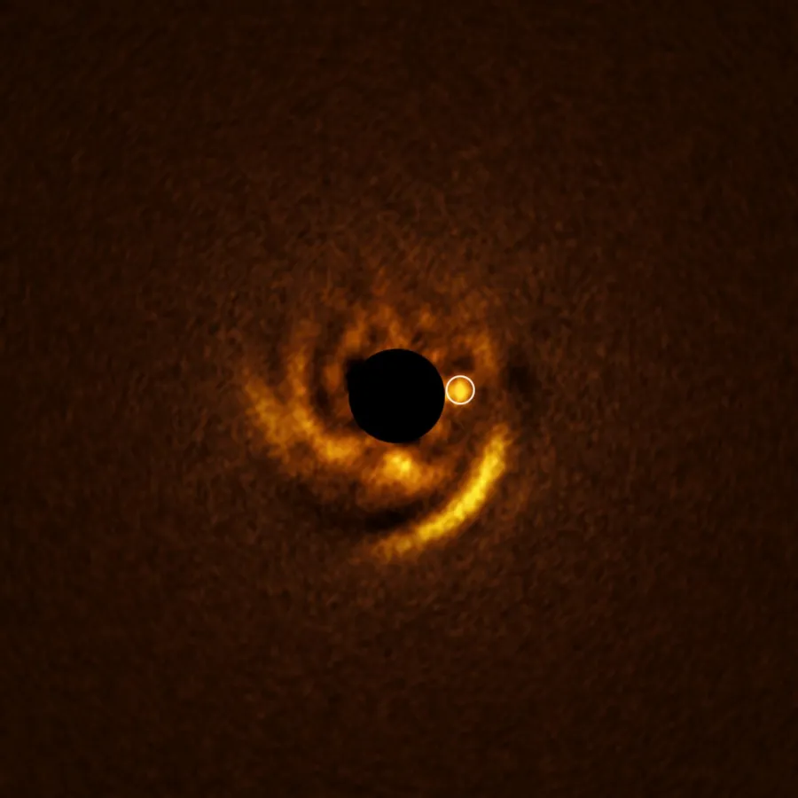

21. Juli 2025
Planetenkandidat am Fuß eines Spiralarms um HD 135344B
Mit dem Instrument ERIS am Very Large Telescope der ESO wurde in der Scheibe um den jungen Stern HD 135344B ein möglicher entstehender Planet entdeckt. Im Bild verdeckt ein Koronograf den Stern (schwarzer Kreis); ein weißer Kreis markiert den Kandidaten am Fuß eines der Spiralarme der Scheibe.
Die ESO beschreibt den Kandidaten als etwa doppelt so groß wie Jupiter und ungefähr so weit von seinem Stern entfernt wie Neptun von der Sonne. Der Stern liegt rund 440 Lichtjahre entfernt. Es handelt sich um einen Kandidaten, nicht um eine bestätigte Entdeckung.
Quellen: ESO: "Astronomers witness newborn planet sculpting the dust around it" (eso2513)., 21.07.2025; ESO: "Disc and a candidate planet around the star HD 135344B as seen with ERIS" (image eso2513b)., 21.07.2025; ESO: "A planet candidate around the star HD 135344B" (image eso2513a, source of the distance of about 440 light-years)., 21.07.2025